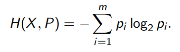
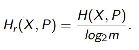
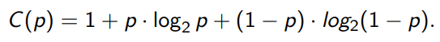

Kodovani
Entropie

Entropie =
Relativní entropie

Relativní entropie =
Fanův kód
Jsem moc línej tohle implementovat, protože to je pain a existuje na to stránka
Na stránce smazat vše co tam je, pak dát import a použít cheat kousek níž
- Seřadíme prvky od nejvyšší po nejnižší
- Vezmu nejvyšší a nejnižší hodnotu, přičítám k nejnižší hodnotě, dokud není vyšší než nejvyšší, přičtu k nejvyšší a opakuju, dokud mám čísla
- Z těch čísel co dostanu to opakuju, dokud nebudu mít jen jednoprvkové časti
- KF=Suma všech prvků co jsem musel napsat (bez těch vstupních)
Cheat na stránku:
Huffmanův kód
Stejnej případ jako u Fanova kódu, tady je stránka, použíjte cheat úplně stejně
- Najdu 2 nejnižší pravděpodobnosti (počítaj se i počáteční i už spočítaný)
- KH=Suma všech prvků co jsem musel napsat (bez těch vstupních, přičítám i jedničku na konci)
Oprava kódů
Oprava =
2chybný kód stačí vzít ten broken kód co nám dal a změnit jakoukoliv číslici, kromě té co už je jako chyba
Zas klidně zadat a přepočítá se Oprava
Kapacita

Kapacita =
Shannonova věta
Ano vzorec je legit H/C (entropie/kapacita)
Shannonova věta =